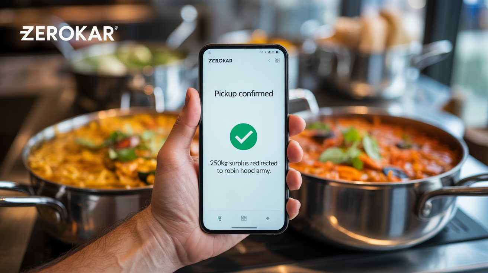

ZEROKAR automates restaurant-to-NGO food redistribution using AI matching and integrated logistics.
Restaurants cut costs. Communities get fed. No coordination overhead.
12 restaurants. 340+ meals redistributed. Bengaluru beta.

The supply side wastes. The demand side starves. The infrastructure to connect them doesn't exist at scale — yet.
India wastes 68 million tonnes of food annually — a ₹92,000 crore economic haemorrhage.
200 million people remain chronically food insecure in the same country generating this surplus.
Urban restaurants discard 30–40% of daily prep every night — not from negligence, but from a lack of infrastructure.
Manual donation programs exist, but they rely on phone calls, personal networks, and luck. They are slow, unscalable, and impossible to audit.
The gap isn't goodwill. It's infrastructure.
ZEROKAR is a mobile-first platform that turns surplus food management from a chore into a zero-effort, zero-cost operation for restaurants. Restaurants log surplus in 30 seconds; our AI handles everything else.
We're not a charity app. We're the infrastructure layer that makes food redistribution as frictionless as ordering a cab — with real-time matching, verified recipients, automated pickup, and auditable impact reporting.
Predicts excess inventory 2 hours before close, giving restaurants time to act instead of react.
Matches surplus to the nearest verified NGO with confirmed capacity — in real time, every time.
Pickup coordinated automatically via our logistics partner. Zero coordination overhead for the restaurant.
Auto-generates FSSAI-compliant CSR certificates with every transfer — unlocking tax benefits instantly.
Real-time reporting on meals redistributed, kg saved, CO₂ offset, and CSR value generated — shareable for brand and compliance teams.
Restaurant staff logs food surplus on the ZEROKAR app in under 30 seconds. Photo, quantity, pickup window — done.
Our algorithm instantly matches the surplus to the nearest verified NGO with confirmed capacity, dietary compatibility, and pickup availability.
Logistics partner handles collection and delivery with timestamped proof. Restaurant gets CSR certificate. Community gets fed.
India's food service sector is digitizing fast. ZEROKAR enters at the infrastructure layer — stickier, higher-margin, and defensible.
The primary revenue driver — a sticky SaaS that pays for itself in tax savings.
NGOs are the supply network. Keeping them free is what creates defensible density.
Computer science engineer turned F&B entrepreneur. Built Mysteria from scratch into Varanasi's leading café — seeing food waste firsthand from day one. Now applying engineering thinking to the infrastructure problem he lived.
"I watched perfectly good food go in the bin every night while knowing families 2 km away were going hungry. That's not a charity problem — it's an infrastructure problem."
Actively hiring: CTO · City Operations Lead · Growth Lead
This round gets us to 100 restaurants across 3 cities in 12 months — the milestone that unlocks a Series A.
Every day we don't scale, 40 tonnes of food disappears in Delhi alone.